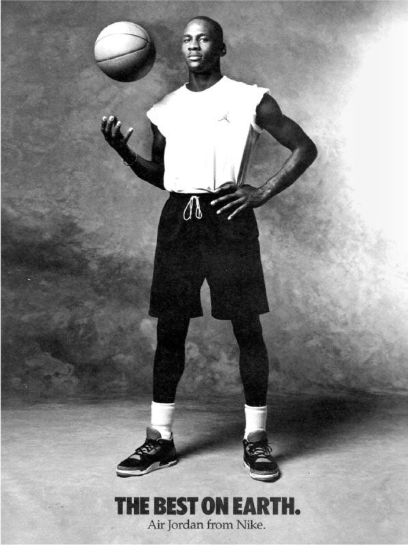

O Legado da elegância em cada par
Na SneakerHead, buscamos inspiração nos maiores ícones do esporte e da moda.
Nossa coleção de sneakers premium envolve também o legado de elegância e excelência personificado por lendas como Michael Jordan.
Como amantes do basquete e admiradores da moda sneaker, entendemos a influência transformadora que Jordan teve em ambos os campos.
É por isso que nossos sneakers capturam a essência do seu legado, incorporando a qualidade, o estilo e a atitude que o tornaram uma figura lendária.